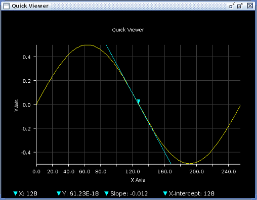

Slope Marker
A slope marker can be set up using the slope marker functions in the Tool Bar.
The slope marker consists of a downward triangle marker and a tangent line of the position where the marker is. The downward triangle marker can be drag anywhere along the trace by left-clicking and holding. The tangent line is dynamically synchronized with the position of the marker. The slope marker information such as the X-intercept is shown at the bottom of the graph.

Slope Marker Functions

Slope Marker Visible/Non-Visible - This function allows you to make the slope marker visible or non-visible.
Find Max Slope - This function allows you to find the max slope of the trace and move the slope marker to the position.
Functional changes
- Introduced in SmarTest 7.4.3